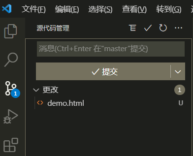

VSCode集成GitHub
初始化
- 新建项目文件夹VSCodeTest
- VSCode打开项目文件夹，在源代码管理中初始化仓库；项目文件夹中出现.git文件夹
- 
- 源代码管理中，文本框输入注释，点击对号按钮 [本质输入命令git add . 和 git commit]
申请秘钥
- ssh-keygen -t rsa -C "邮箱"
- 注意：邮箱就是GitHub账号
- 操作步骤：
- 打开Git Bash Here面板，输入命令：ssh-keygen -t rsa -C "邮箱"，连敲三次回车;
- 面板中出现：Your public key has been saved in /../.id_rsa.pub，秘钥文件所在位置；
- 编辑器打开.pub文件；
GitHub配置秘钥
- 登录GitHub，点击：头像-->Settings-->SSH and GPG keys-->New SSh key；
- SSH keys / Add new中：Title文本框，起名称；Key文本框，.pub文件中的内容粘贴至此，点击Add SSH key；
测试秘钥是否匹配
- Git Bash Here面板，输入命令：ssh -T 'git@github.com'；
- 面板中出现：Hi ...，联通了，没有出现，配置错误；
创建GitHub仓库
- 点击+ --> New repository；
- Create a new repository面板中：

- Git Bash Here面板，输入红色文本框内的两条命令：
- 注意：两条命令报错，可在VSCode中，提交
- 一旦push过一次，今后每一次都可以使用VSCode提交了